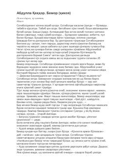

BKambag'al Sotiboldining og'ir xastalikka uchragan xotini taqdiri haqidagi ta'sirli hikoya.
Ushbu hikoyada kambag'al Sotiboldining og'ir kasallikka chalingan xotinini davolatish yo'lidagi sargardonliklari va jamiyatdagi illatlar ta'sirida boshidan kechirgan fojeali qismati tasvirlangan. Asar oddiy xalqning og'ir turmush tarzi va achinarli holatini o'tkir badiiy til bilan ochib beradi.